0. 課程資訊與教材
| 課程名稱 | 生成式AI應用電台・訂閱制第二季，第一堂 |
|---|---|
| 直播日期 | 2026/04/10（五）20:00，本段錄影全長 2 小時 47 分 16 秒（單段、中間沒有休息） |
| 講師 | 益師傅（楊俊益・ECF） |
| 本堂主題 | 瀏覽器外掛串 NotebookLM、圖上中文字的修法、提示詞改寫成 Claude Skill、台股分析 Gem、Ollama 本地模型、自寫生圖工具 |
| 課程定位 | 實作課，沒有簡報。全程是他本人的螢幕操作，邊做邊講、失敗也直播 |
| 要先準備 | Chrome、Google 帳號（NotebookLM／Gemini）、免費的 Groq API Key；想跟著跑本地模型的另外裝 Ollama |
🧰 課堂上用到的工具檔
這五份是他當堂發到課程資料夾、要大家一起打開跟著做的檔案。檔案本身與下載連結不放在這一頁（見最後一章的說明）。
| 工具檔 | 課堂上拿來做什麼 |
|---|---|
ECF_PDFIMG_Editor v3.6 | 他自己寫的圖片／PDF 文字重繪工具，三萬多行。第 5 章的偵測、框選、圖選、旋轉重新辨識都在這支上示範 |
Mirage_Studio_v2.html | 串 Pollinations 的生圖工具，附中文提示詞翻英、去背、裁切、風格融合。第 12 章 |
AI辯論大亂鬥-多模式版 v2.html | 他取名 OmniMind 的本地端介面，同時串 Ollama、Gemini、Groq 三個模型。第 10 章 |
台股深度分析系統（FinMind 版） | 台股分析提示詞，課堂上貼進 Gemini 做成 Gem。第 8 章 |
簡報產生器（純文字檔） | 從 Google Opal 匯出的流程腳本，課堂上請 Claude 把它改寫成 Skill。第 7 章 |
1. 一張圖看懂這堂
這堂表面上是十幾個工具的操作教學，實際上是一條「由淺到深」的階梯，而最後一階不是技術，是判準。
2. 先把入口打通：讓資料自己走進 NotebookLM
他從「最簡單的」開始，而這個最簡單的其實解掉一個很煩的日常：找到資料 → 存成檔案 → 再上傳到 NotebookLM 這一串三步動作。
一、Gemini 現在可以直接把 NotebookLM 當來源
他先示範 Gemini 的工具選單裡多出來的 NotebookLM 選項：不用再把檔案重新上傳一次，可以直接指定你既有的 NotebookLM Project，讓 Gemini 從那個 Project 的來源裡回答。
但他當場也講了保留意見：「這都是理想中的狀態。」平常給檔案都會產生幻覺，說串上 NotebookLM 就不會幻覺，他不確定。這個功能是分批開放的，有人有、有人沒有，他當場請大家回報 1 或 2 清點。
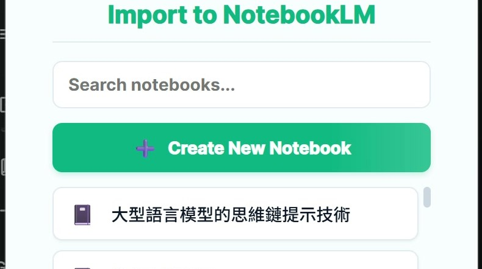
二、真正好用的是那個外掛：右鍵就把東西送進 Project
他重點推的是一個 NotebookLM 專用的 Chrome 外掛 Kortex（Chrome 線上應用程式商店上的標題是「KORTEX: Your Power Toolkit for Google NotebookLM」，十萬名使用者）。裝完之後要做一個很多人會漏掉的動作：
- 裝好外掛，把 Chrome 完全關掉再重開（不然授權不會生效、圖示不會出現）。
- 點擴充功能圖示，找到它，把大頭針壓下去，讓它固定在工具列上。
- 之後在任何網頁上選取文字 → 按右鍵，選單裡就會出現「送到 NotebookLM」，接著挑要放進哪一個 Project。
- YouTube 影片頁上有一顆
Import to NotebookLM，一鍵把整支影片加成來源。
他當場示範把一段網頁文字丟進 Project，再切到 NotebookLM 確認那段話真的進去了。「不然你以前要存成檔案，存成檔案之後再到 NotebookLM 裡頭把它 Input 進來。」
三、來源多了以後，用分門別類來管
加得快，就會亂。他接著指出來源面板上那排篩選鈕——這是這一章最實用、最容易被忽略的一格。
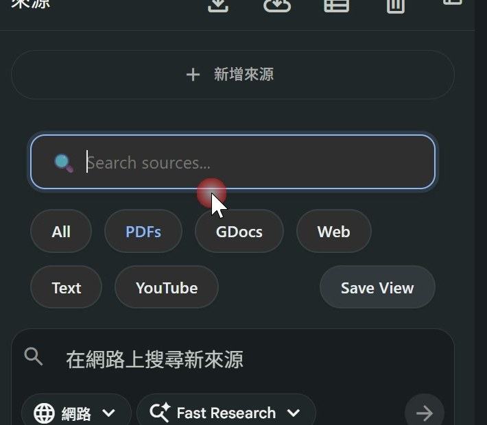
All／PDFs／GDocs／Web／Text／YouTube，再加一顆 Save View。它會自動按來源型態分類，你有一百份資料但只想看 PDF，點一下就好，還能把這個檢視存起來。重要之處在於：外掛負責「加得快」，這排鈕負責「加了不亂」，兩件要一起用。［10:20］3. 誠實的一段：Magic Layers 把對的字也改壞了
這一段他本來是要示範一個好用功能，結果現場實測的結論是「不值得用」——而他照實講完，沒有跳過。
問題是什麼：AI 生的圖，中文字會爛掉
他先給大家看一張自己在教師研習做出來的圖表，畫面漂亮、字也對。他說這是因為提示詞裡把三件事寫清楚了：
- 主題——寫「頁面主題」而不是只寫「主題」，不然 AI 會直接去抓來源檔的標題，做出你不要的標。
- 風格——他固定寫「麥肯錫專業商業圖表風」，出來的版面才有商業感。
- 版型——「五大功能區塊，每個區塊五個條列」，把結構直接規定死。
另外一個很實用的細節：怕它配色亂就直接指定白色背景。理由不是好看，是為了後面好修——「越單純的背景，其實要去改字、改圖比較容易；越絢麗的背景很難改。」［13:30］
他試的方法：把圖丟進 Canva，用 Magic Layers 掃一遍
操作本身很短，但有一個前置條件不做就找不到功能：
- Canva 左下角 → Settings → 語言改成 English (US)。這個功能在中文介面下不會出現。
- 把圖拖進畫布，點選圖片 → 按 Edit。
- 在
Magic Studio區塊裡選 Magic Layers，它會開始掃描整張圖。
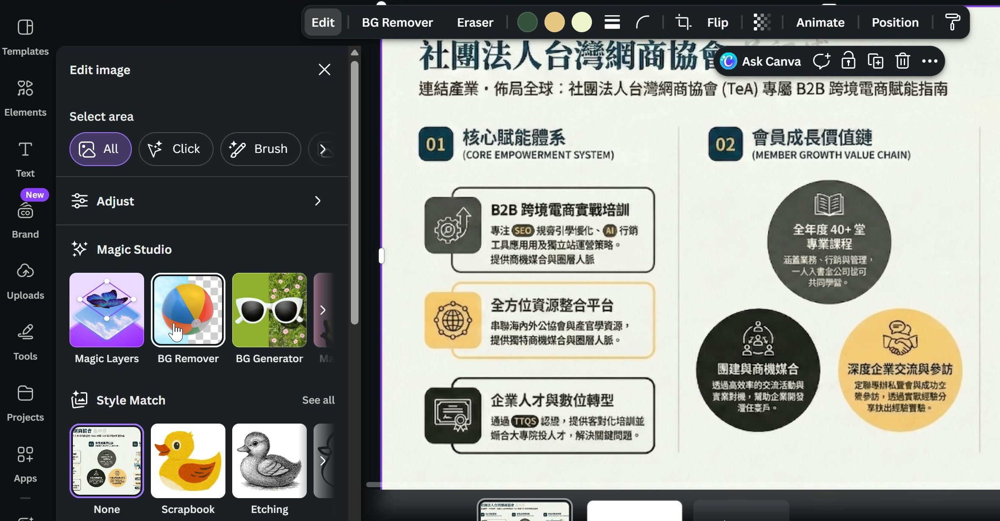
Magic Studio 那一排：Magic Layers／BG Remover／BG Generator——他用的是第一顆。上面 Select area 的 All／Click／Brush 是選範圍，但 Magic Layers 這一顆不吃選區，按下去就是整張一起處理。這正是後面出事的原因。［16:40］結果：原本對的字全部被改壞
掃完之後畫面確實把圖上的字都變成可編輯的文字方塊了——問題是它連原本正確的字也一起重寫。他把兩張放在一起比對，落差很明顯。
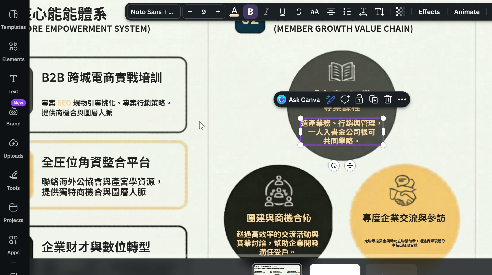
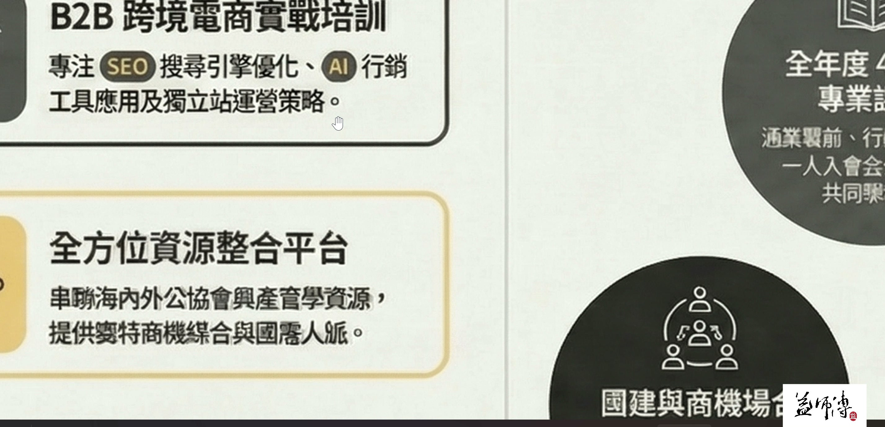
4. 錨定原理：畫一個紅框，AI 就只改那一塊
這是全場最可以馬上拿去用的一招，也是他自己說「網路上很少人這樣做」的差異化做法。方法笨到不可思議，但有效。
第一步：在圖上把有問題的地方框起來
用任何一個畫圖工具（他直接用 Windows 內建的），選紅色線框工具，把糊掉、寫錯的字圈起來。可以圈多個。不要整張圈起來——整張圈等於又回到「全部改」，前一章的問題會原封不動搬過來。
框完存成 PNG，檔名寫得看得懂就好，例如 待修改.png。
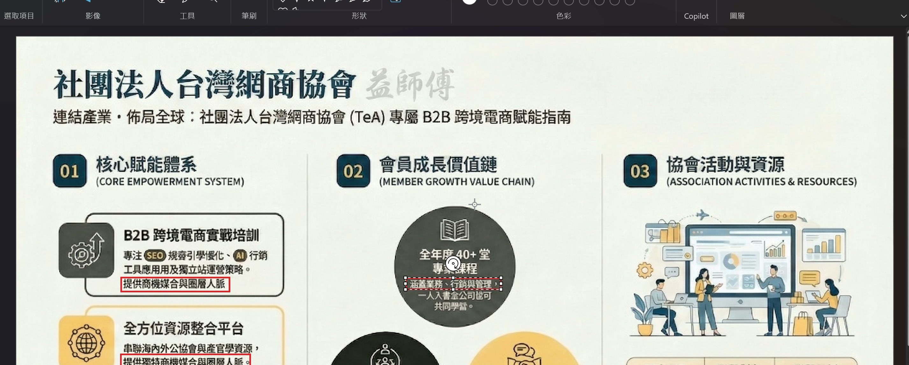
第二步：貼那段提示詞，用 Pro 模型改
他強調這段提示詞是自己一個字一個字磨出來的，不是叫 AI 幫他寫的：「我看到網路上很多的提示詞拿來用，我發現都改的不是很好，我就自己去做，一直改一直改。」
它其實只在講四件事，每一件都對應一種常見翻車：
| 提示詞裡那一句 | 它在防什麼 |
|---|---|
| 先進行辨識、儘可能用原字義 | 防 AI 自己重寫內容。看不懂才准依上下文推敲，不准自由創作 |
| 不能超過紅色框線的範圍 | 防它順手改到旁邊沒問題的字——第 3 章 Canva 就是敗在這裡 |
| 字體大小要一樣 | 防它改完字型跳掉。他特別提醒「這段話很重要，不然他會變字體」［24:30］ |
| 重新生成文字後並把紅色框去除 | 你畫的框是給 AI 看的記號，不是給讀者看的。這句讓它自己收尾 |
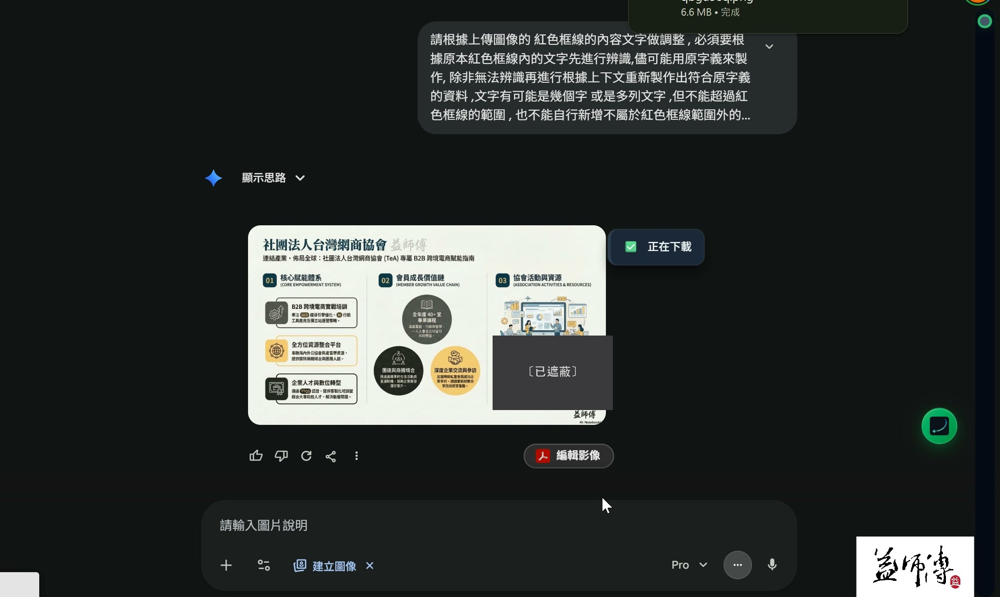
第三步：不要看預覽，一定要下載
這是最容易白忙一場的地方。改完在對話框裡看，會覺得沒變好；下載下來看，解析度才會加強，原本霧掉的字會變清楚。
同一招還能拿來改內容，不只是修錯字
有學員問能不能連內容一起改。可以，而且是同一套框：框起來 → 告訴它「請把紅色框裡頭的字改為某某」→ 加上「框內字體要一樣」→ 加上「改完把紅色框去除」。他的說法是「雖然很笨，但是一定改得通」。
5. 他寧可自己寫工具：偵測、框選、圖選三種改法
同一件事（改圖上的中文字），他自己寫了一支三萬多行的桌面工具。這一章值得看的不是工具，是他為什麼要多寫這一支，以及他自己最常用哪一種模式。
三種改法，用途完全不同
| 模式 | 怎麼運作 | 他自己怎麼用 |
|---|---|---|
| 偵測 | 按一下，AI 把整張圖上的文字全部找出來、逐條編號列在面板上，你自己勾要改哪幾條 | 示範用。「全面很雜很亂，因為太多東西要編輯了。」圖太細它還會一直跑不停 |
| 框選 | 自己拉一個框，只辨識框裡的字，可以吸底色、可以調旋轉角度後重新辨識 | 他大部分都用這個。跟第 4 章紅框是同一個思路——先把範圍講清楚 |
| 圖選 | 選一塊像素直接刪掉，或整塊搬到別的位置（會變透明） | 要「移掉」或「搬走」東西時用，不是拿來改字的 |
偵測那顆按鈕背後是接 Groq 的視覺 API：它會描述這張圖裡有什麼、再辨識裡面的字。要用就得自己去 Groq 申請一組免費 Key 貼進工具裡。
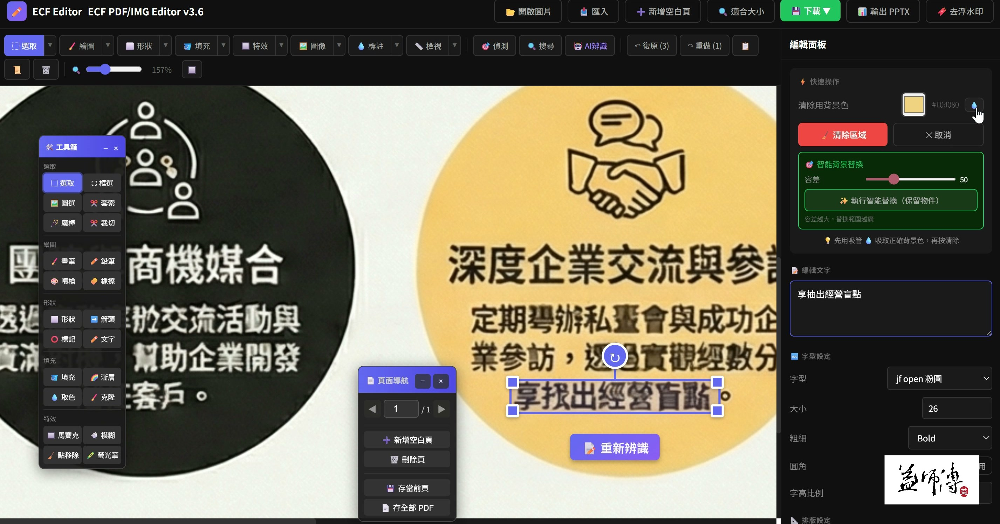
ECF PDF/IMG Editor v3.6。看右側編輯面板的順序：先「清除用背景色」吸一次底色 → 再「智慧背景替換（保留物件）」把容差調到 50 → 最下面「編輯文字」直接打新字，字型選 jf open 粉圓、大小 26、粗細 Bold。左邊那個浮動工具箱是選取、圖選、框選、魔棒、裁切等工具。為什麼重要：這一整條流程就是把第 4 章的「只改該改的一塊」做成按鈕，不必每次重寫提示詞。［40:00］框選模式裡最值錢的一顆鈕：重新辨識
他花最久寫、也最得意的是斜體字的處理：階層圖、心智圖上的字常常是斜的，斜又糊，一般 OCR 直接放棄。做法是——
- 框選要改的區域，範圍記得要蓋過整段斜字。
- 把框上的旋轉角度轉到跟那段字一樣斜。
- 按「重新辨識」，它會依這個角度重跑一次，出來的字也是斜的。
他也照實說了缺點：辨識完的字級不會自動配好，還要手動再調一次。
6. 把提示詞升級成技能：Skill 不必進到某個機器人裡
課程走到一半，有學員問能不能把第 4 章那段紅框提示詞做成一個「券」（Gem）。他順著這個問題，把 Skill 與 Gem 的差別講清楚——這是整堂在觀念上最重要的一段。
做法本身只有一句話
不需要什麼特別語法，就是直接跟 AI 說：
它會回一份寫成 Skill 格式的文件，含觸發關鍵字與執行步驟。他先在 Perplexity 試，因為Perplexity 的技能功能不用另外付費。
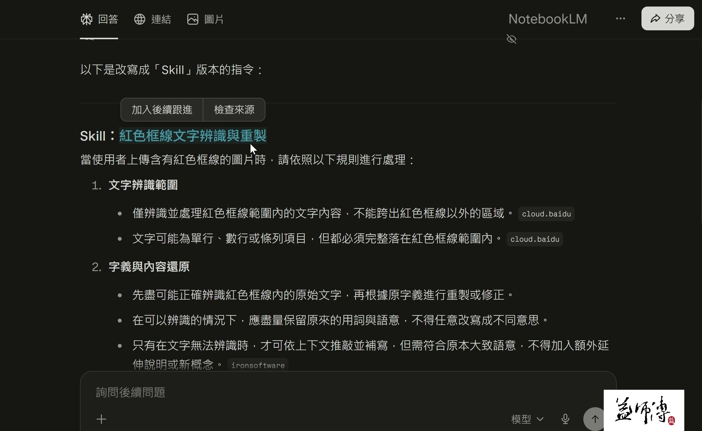
更多 → 技能 → Create Skill 這條路，結果被要求升級付費。他還特別去問過 AI「Skill 要不要錢」，得到的答案是不用，實際操作卻被擋。他當場請學員回報：能用的按 8、不能用的按 4，全班都是不能用。如果你也卡在這裡，不是你操作錯。Skill 與 Gem 到底差在哪
這是這一章真正的重點。他的比較很直接：
| 比較的維度 | Gemini 的 Gem（他口中的「券」） | Claude 的 Skill |
|---|---|---|
| 怎麼啟用 | 非得進到那個 Gem 裡面才能用 | 在一般對話裡提到相關字眼就會被叫用 |
| 能不能互相叫用 | 目前不行 | 可以，一次叫 A 也可以再叫 B |
| 能不能排程 | 可以（Gemini 的排程功能） | 要走 Cowork 那條，要付費 |
| 能不能分享 | 比較麻煩 | 可以下載，別人按「＋ upload」就能用 |
他還補了一個歷史對照：兩年前 ChatGPT 的 GPTs 也是一開始不能互相叫用，後來才能用 @ 在任何對話裡把某個 GPTs 叫進來。他推測 Gemini 的 Gem 遲早也會走到這一步。
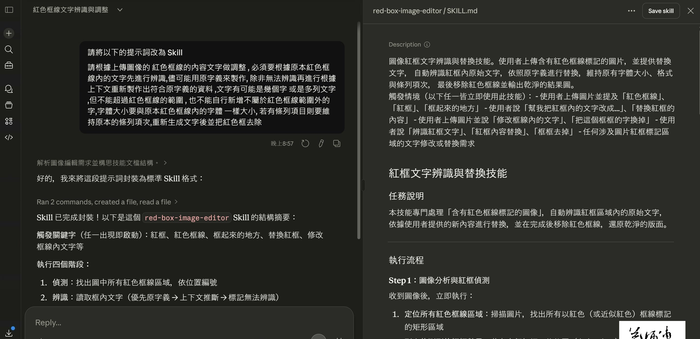
red-box-image-editor / SKILL.md。看「觸發情境」那一段——它自己列出一整排會啟動這個技能的說法：「紅色框線」「框起來的地方」「幫我把紅框內的文字改成…」「替換紅框的內容」「把這個框裡的字換掉」。這就是 Skill 跟 Gem 最大的差別：你不用記工具在哪，講人話它就自己出來。右上角那顆 Save skill 按下去才會真的存進技能庫。［61:00］7. 從 Opal 流程到 Skill：講一句話就自動叫用
上一章是「把提示詞變成 Skill」，這一章更進一步：把一整套節點流程變成 Skill。這是全場技術含量最高、也最漂亮的一段示範。
做法：把流程當純文字丟過去就好
- 在 Google Opal 裡打開你做好的流程，Ctrl＋A、Ctrl＋C 整份複製。
- 開一個記事本貼上——你會發現它其實就是一段純文字腳本。
- 丟給 Claude，跟它說「請將以下的 Opal 腳本轉換成 Skill」，順手給它一個名字。
他說 Node-RED 的 JSON 也一樣可以：「因為在 Claude 裡頭他都懂，但是你一定要去符合所有的流程。」
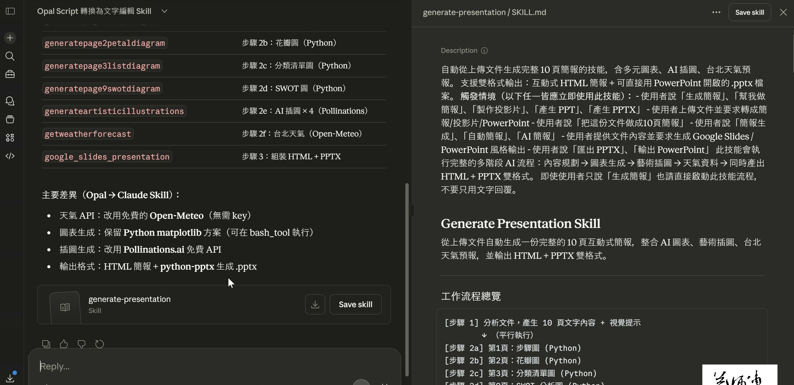
python-pptx 產 .pptx。右邊是產出的 SKILL.md 與工作流程總覽，步驟 1 分析文件產 10 頁文字，步驟 2a–2f 平行做封面圖、花瓣圖、分類清單圖、SWOT 圖、四張 AI 插圖、抓台北天氣。為什麼重要：AI 不是照抄流程，是把付費節點換成免費做法後再重組。［65:00］存起來之後，叫用它不用打指令
存進技能庫之後，他丟一份 PDF 進去，只講了一句人話：
Claude 自己去技能庫裡找到那支簡報產生器，然後照流程一步一步跑。
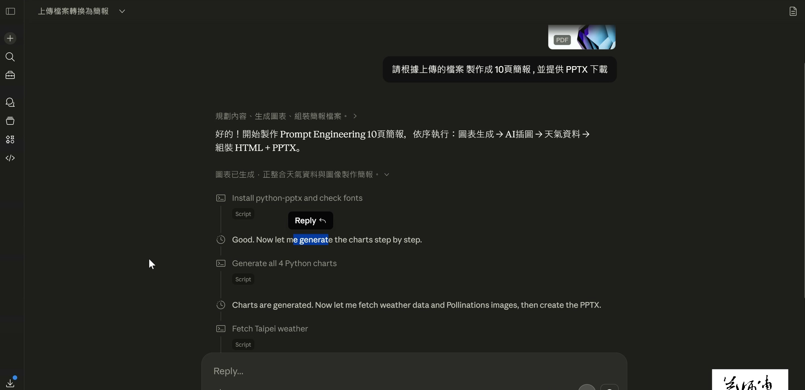
Install python-pptx and check fonts、Generate all 4 Python charts、Fetch Taipei weather。使用者只講了一句話，中間沒有任何指令——這就是上一章「不用進到機器人裡」的實際效果。［70:50］8. 同一份台股提示詞，換掉資料來源就活了
這一章表面在講股票，實際在講一個很多人踩過的坑：程式沒錯、提示詞沒錯，但資料抓不到，整套就廢了。
兩個版本的差別，只在資料從哪來
| 版本 | 資料來源 | 會遇到什麼 |
|---|---|---|
| 舊版 | 直接抓台灣證券交易所 | CORS 會被阻擋，抓不到就變成錯誤資料，整份分析跟著錯 |
| 新版（他這次發的） | 改走 FinMind | 只要一分鐘內讀取次數不要過多就抓得到；他實測資料算正確 |
做法很單純：把提示詞整段複製，到 Gemini 新增一個 Gem 貼進去、存檔，之後輸入股票代號就會跑。他建議直接給中文名稱最好，代號有時候對不上。
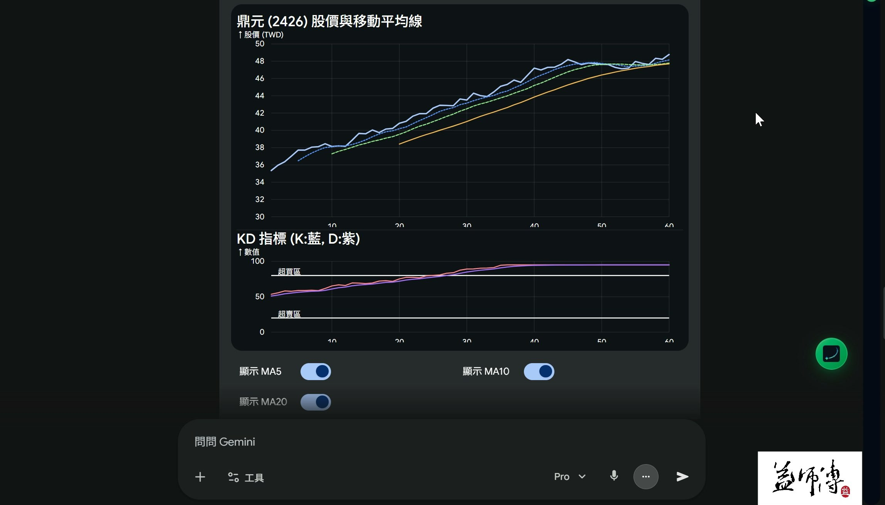
9. 本地模型不是給每個人的：先看你的記憶體
從這裡開始進入「要不要自己養一套」。他先把門檻講清楚，而不是先講怎麼裝——這個順序很重要。
Ollama 是圖書館管理員，不是書
硬體門檻：他直接把數字講出來
- 沒有獨立顯卡也能跑，但它會吃你的系統記憶體。
- 記憶體只有 8GB 一定跑不動，整台會癱掉；16GB 以上勉強可用。
- 他自己的獨顯是 8GB，所以裝的模型都控制在 8GB 以內。
- 顯卡夠力才考慮大版本；他提到還有 31B 的版本，佔用約 20GB。
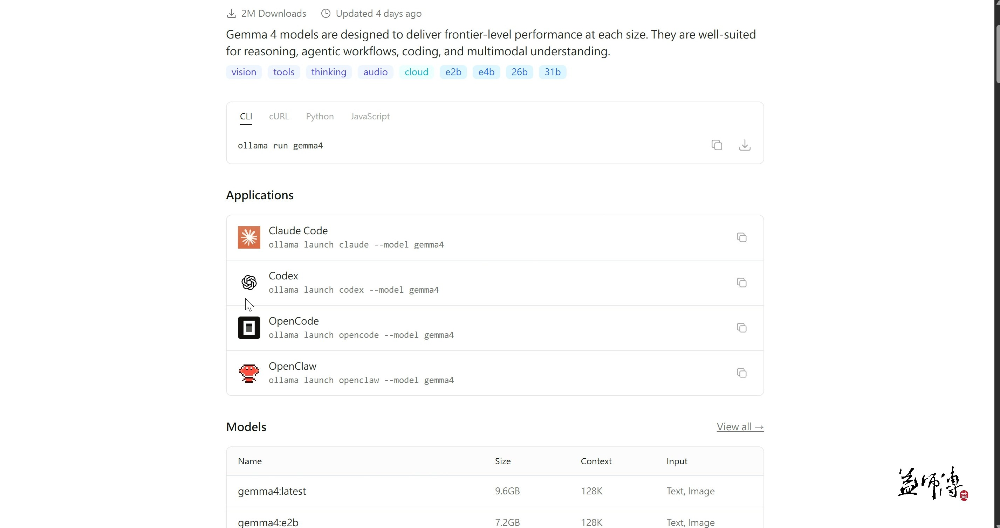
vision／tools／thinking／audio／cloud 加上尺寸 e2b／e4b／26b／31b，說明它是多模態、能看圖也能聽音檔；下面 Models 表列出每個版本的實際大小（gemma4:latest 9.6GB、gemma4:e2b 7.2GB，都是 128K 上下文）。為什麼重要：要挑哪一版不是看名字，是拿這張表的容量去對你的記憶體。［95:50］下載就是複製這一行貼進 PowerShell：
要有介面才用得起來，他推 Page Assist
Ollama 本身沒有好用的對話介面。他試過網路上的 Ollama UI 外掛，評語是「不好用，因為它沒有附加文件的功能」——只能純問答，不能丟檔案。他建議改用 Page Assist，同樣是 Chrome 外掛，可以附文件。
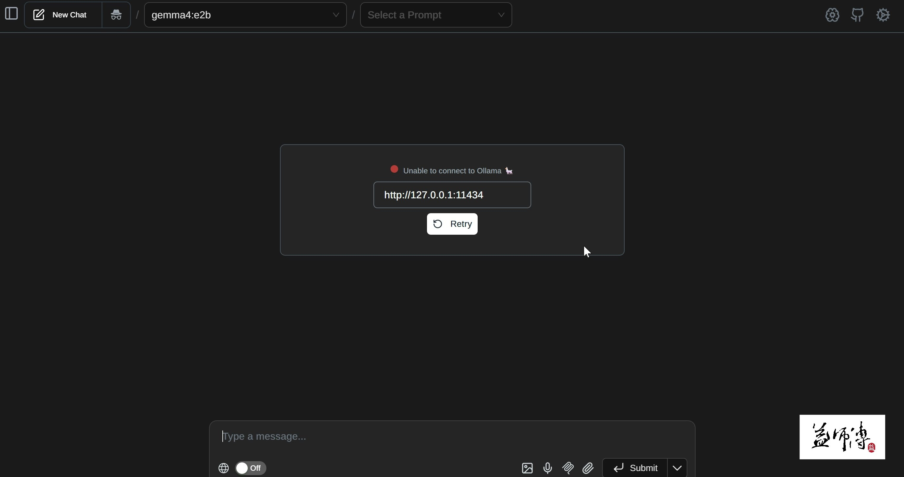
gemma4:e2b，中間卻跳出 Unable to connect to Ollama 與那串 http://127.0.0.1:11434。為什麼放這張：這是照實記錄——當天不只他，學員也一直連線失敗，這一格比「連上了」的畫面有用。［98:20］ollama run gemma4 強制執行一次。另外先用 Page Assist 的模型下拉選單確認模型真的在，不要拿他的工具去驗；模型沒下載成功就不可能連得上。10. 一個本地端 UI 長什麼樣：三個模型自己辯論
他自己寫了一支網頁，把 Ollama、Gemini、Groq 三個模型接在同一個介面裡。這一章看的是「本地端工具可以做到什麼程度」，以及它真正的價值在哪。
四種模式，一個介面
- 人機對話——單一模型，就當成離線版的 Gemini 在用。
- 2 模型辯論／3 模型辯論——給一個題目、給每個模型一個立場，設定輪數，讓它們互相打。
- 2 模型深析／3 模型深析——不對打，改成分工分析同一件事。
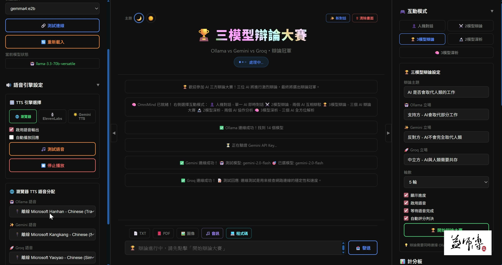
gemini-2.0-flash、Groq 也通了。左邊是 TTS 引擎選擇（瀏覽器／ElevenLabs／Gemini TTS）。為什麼重要：這說明「本地」不等於「只能用本地模型」——它是本地介面，串誰由你決定。［105:00］語音那一段：他解釋了為什麼要保留瀏覽器 TTS
Gemini 的 Flash TTS 聲音明顯自然得多，但要付費的 API Key。瀏覽器內建的 TTS 聲音「有點傻傻的」，他還是留著——理由是「萬一你哪一天不用這兩個，只單純用 Ollama 本地端，你可以選擇離線的語音」。這是自己寫工具才做得到的設計取捨。
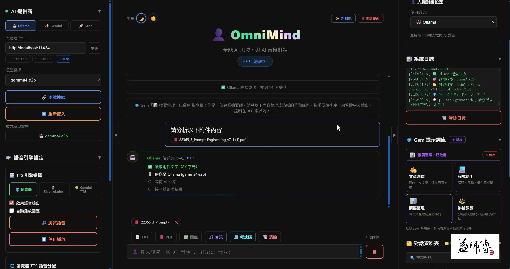
11. 全場最重要的一段：不要追，先問你要解決什麼
講完本地模型，他停下所有示範，講了 15 分鐘沒有任何畫面的話。他自己說是「打一個安心的針」。如果這堂只看一章，看這一章。
他觀察到的現象：上完課，回去不知道要做什麼
他說每次 AI Agent 的課上完，最多的疑問是「我帶回去到底要做什麼」——只能照著老師的範例跑，做不出自己的東西。他認為原因不在工具難，在於學的人本來就不知道 AI Agent 能幫自己做什麼，全部都是別人給的東西照著做。
他為什麼說「不用一直跟」
- 換得太快——「每隔兩三個禮拜又換一個新的做法」，永遠學不完。他建議回頭看兩個月前你熬夜學會的東西，現在還在用嗎？
- 權限不在你手上——想串別的部門的系統，對方不一定給你串。「你們公司的 IT 在主導，不是嗎？」
- 企業要的不是安裝教學——他跑企業演講的實際經驗：對方要談的是「你目前的解決方案是什麼」，然後派 IT 或 MIS 人員來學，不是全公司一起來學怎麼裝工具。
- 少了稽核點就不能上線——他做過 ERP、Workflow、e-Form，一句話點出關鍵：「你的稽核點是什麼？你安全性的驗證在哪裡？」一鍵自動化在五人公司可以，大公司不行。
12. Mirage Studio：不用錢的生圖、去背與裁切
最後一段回到工具。這支是他自己寫的生圖介面，重點不是生圖能力，是那兩個「他找很久才找到、而且不用錢」的附加功能。
它其實是三個免費服務接起來的
| 用到哪個服務 | 負責什麼 | 要準備什麼 |
|---|---|---|
| Pollinations | 生圖本體 | 免費 API Key。每一組 Key 只能生 10 張，用完手動切下一組 |
| Groq | 把中文提示詞翻成英文、解析上傳圖片、生成融合提示詞 | 免費 API Key |
| Remove Background API | 去背 | 免費 API Key，一天有次數限制 |
他解釋為什麼要中間插一層翻譯：Pollinations 本身不吃中文，所以打中文的時候會先送去 Groq 翻成英文，再丟給 Pollinations 生圖。有人問為什麼不用 Gemini 翻——因為 Gemini 的 API 要錢，他還在考慮要不要做成兩用。
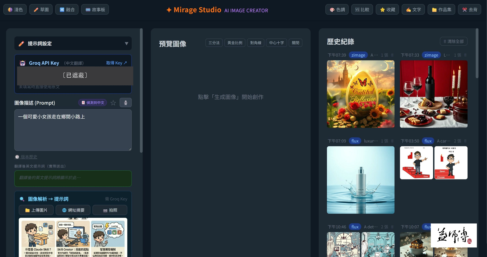
他自己最推的功能：去背
去背原本寫在生圖流程裡，後來他獨立出來，因為「有時候你只是單純想圖像去背」——不用生圖，直接拖一張進去按「去除背景」就好。他實測連漸層背景都吃得掉，難一點的圖也還可以。
另外兩個他熬夜寫出來的功能
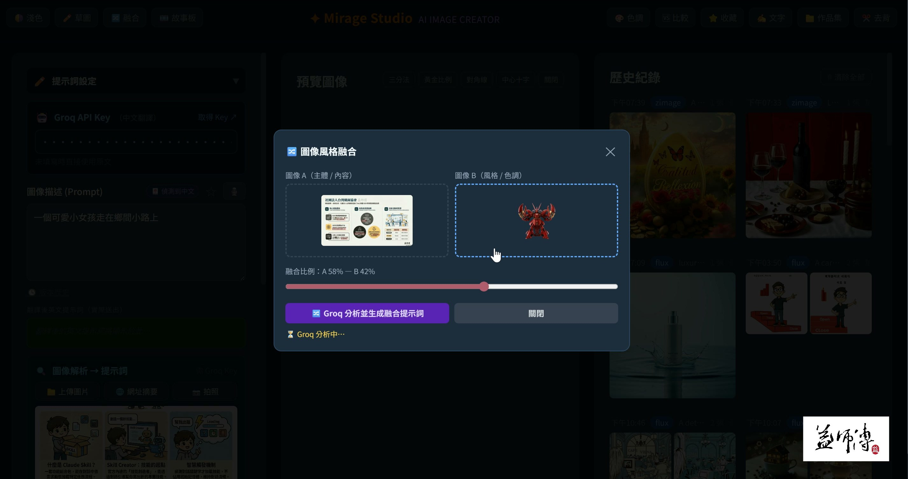
13. 這堂課真正在教的事
一、AI 修東西的成敗，取決於你有沒有把範圍講清楚
第 3、4、5 三章講的是同一件事。Canva 的 Magic Layers 失敗，不是因為它辨識不準，是因為它整張一起改；紅框錨定成功，不是因為提示詞高明，是因為它把「動哪裡」變成畫面上看得見的記號。同樣的邏輯搬到他自己的工具裡，就是「框選」比「偵測」好用。要記的不是那段提示詞，是「先指定範圍」這個動作。
二、提示詞的下一站不是更長的提示詞，是變成可以被叫用的技能
一段好提示詞留在對話紀錄裡，隔一週就找不到了。第 6、7 章示範的是把它升級成一份規格：Skill 有名字、有觸發關鍵字、有執行步驟，可以下載、可以給別人、可以在任何一句話裡被自動叫起來。Gem 與 Skill 的差別不是哪個強，是要不要先走進某個房間才能用它。
三、判斷一個工具要不要學，看它解不解得掉你「現在」的問題
這是他花最久講的一件事，也是他自己說「個人觀點」講最多次的一件事。他不反對學新工具，反對的是照著別人的清單追。判準只有一個：你職場上現在卡在哪裡，那個工具能不能解掉。解不掉，先放著；等你需要它的那天，它可能已經變得比現在簡單十倍了——就像當年要熬夜自己架的東西，現在都變成一顆按鈕。
四、失敗要照實講，這件事本身就是教材
這堂有三處當場沒做成：Canva 越改越亂、Perplexity 的 Create Skill 被要求付費、他自己拿錯舊版工具導致效果變差。他一次都沒有跳過或帶過，反而把「為什麼失敗」講成方法。對學員來說，知道哪裡會卡比看到一路順利的示範有用得多。
五、免費不等於將就，但要接受它的邊界
整堂他刻意只用不用錢的方案：Open-Meteo 換掉付費天氣 API、Pollinations 換掉付費生圖、Groq 換掉付費翻譯、Ollama 讓模型跑在自己電腦上。代價很清楚——每組 Key 只能生 10 張、去背有每日次數、7B 模型細節度差一點、免費版存不了 Skill。他的做法是把邊界講明白，然後在邊界內把事情做完，而不是假裝沒有邊界。
14. 老師金句
依影片時間先後排。每一則都回錄影核對過原話。
@ 才叫得出來。這是 Skill 與 Gem 最實際的差別。15. 資料來源與整理說明
| 來源 | 2026/04/10 課堂錄影單段，全長 2 小時 47 分 16 秒；課程資料夾五份工具檔 |
|---|---|
| 整理方式 | 全程本機處理：場景偵測擷取 304 張關鍵畫面、產生 2378 段逐字稿，再依逐字稿手寫章節目錄 |
| 時間戳 | 章節標題與引文後方的［mm:ss］對應錄影播放器時間（超過一小時的部分以總分鐘數表示，例如［120:45］＝2 小時 45 秒） |
| 整理 | 竹貞（Tarshar 的逐幀筆記專員） |
已知限制，請先看過再引用
- 逐字稿是機器產生的，人名與工具名會聽錯。有畫面或上下文可佐證的錯字（Canva 被聽成「KEMA」、Groq 被聽成「Glock」、Claude 被聽成「Cloud」、Perplexity、FinMind、Opal、Gemma 4、Node-RED、錨定原理⋯共 30 類、1,131 處）已修正；不確定的一律保留原樣，沒有猜測補詞。
- 錄影中有數段語音辨識產生的重複幻覺（靜音時段被辨識成無意義的英文字串），整理時已整段捨棄共 120 處，不會出現在本頁。
- 兩個名稱本頁標為待確認，沒有替講師決定寫法：去浮水印的 Chrome 外掛（逐字稿有 Voyager／Moyoyo 兩種聽法，畫面上沒有出現商店頁可以佐證），以及他口中的「龍蝦」（依上下文是一套要自己架設的流程自動化工具，但他全場都用這個暱稱，本頁不代為對應到任何產品）。NotebookLM 那個外掛原本也在待確認清單上，後來在錄影第 4 分 11 秒的 Chrome 商店頁面確認是 Kortex，已據畫面更正。
- 老師全場把 Gemini 的 Gem 稱作「券」、把 Claude 的 Skill 有時稱作「技能」，本頁在第一次出現時對照說明，之後照原話保留，未替換成官方名稱。
- 逐字稿中出現的學員暱稱、提問者稱呼，本頁一律隱去，改寫成「有學員」「有人問」。
- 課堂截圖已全面去識別化。原始錄影是講師整個桌面的螢幕分享：每一張輸出畫面都裁掉頂端的瀏覽器外框（分頁列、網址列、擴充功能列），另外裁掉側邊欄、檔案總管清單與帳號區；私人項目名稱、API Key、示範圖裡的聯絡電話都加了遮蔽框。線上教室的與會者九宮格畫面一張都沒有採用。
- 可信度分級：金句與操作步驟取自錄影實錄；截圖圖說是看懂畫面後改寫的，沒有直接貼 OCR；各版本容量、模型名稱等數字取自畫面文字，可能有辨識誤差，關鍵處請對照原錄影。
- 涉及個股的段落本頁只保留方法，不列代號、價位與績效數字。那不是投資建議。
- 引用到作業、貼文或簡報之前，請對照錄影原始段落再確認一次。